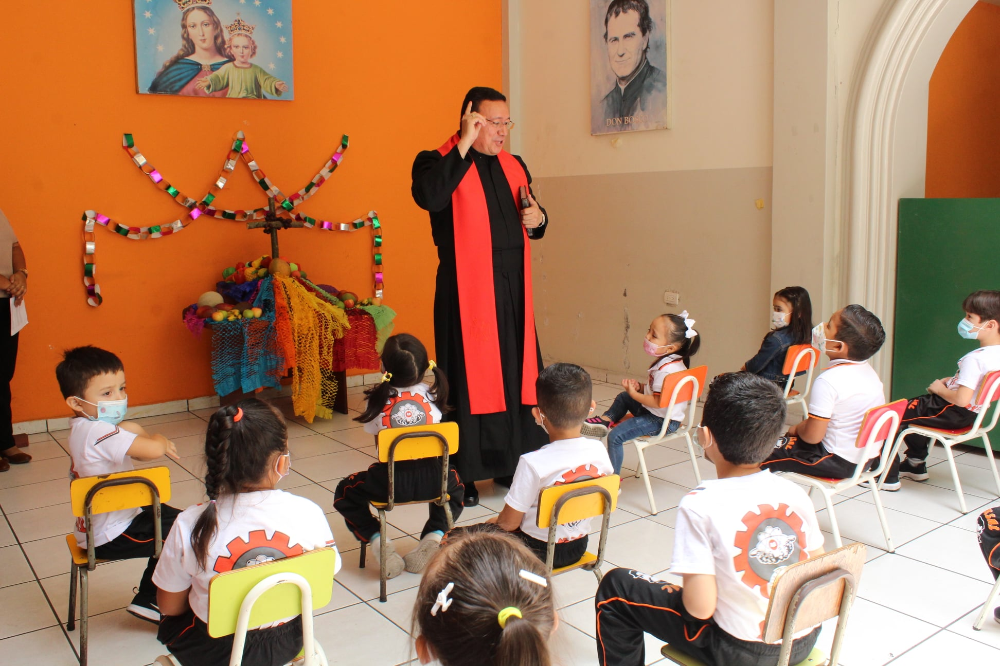
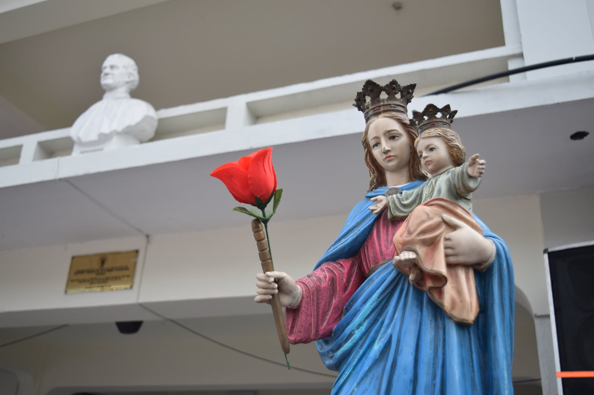
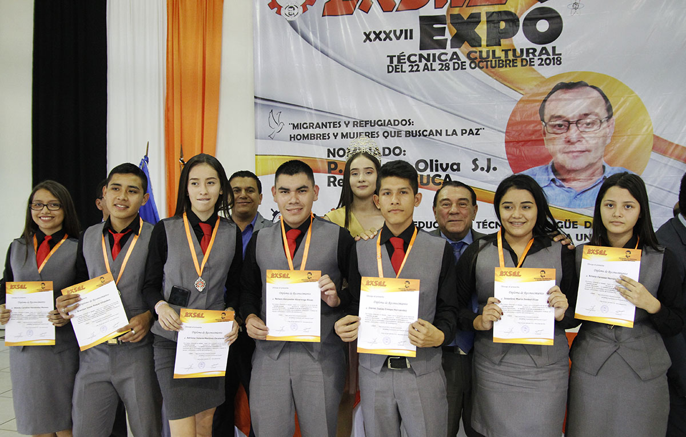

Celebracion a San Juan Bosco
El jueves 28 de enero se celebra en el colegio la fiesta de su fundador, San Juan Bosco (Turín, 1815-1888), declarado "padre y maestro de la juventud" por el Papa San Juan Pablo II.

El jueves 28 de enero se celebra en el colegio la fiesta de su fundador, San Juan Bosco (Turín, 1815-1888), declarado "padre y maestro de la juventud" por el Papa San Juan Pablo II.
El 3 de mayo en muchos países del mundo se conmemora el Día de la Santa Cruz, instituida en el siglo IV. Esta tradición popular, que tiene sus orígenes muy antiguos en Jerusalén, se sigue festejando en varios pueblos de habla hispana.

Instituida por el papa Pío VII, la fiesta de María Auxiliadora de los Cristianos es para perpetuar el recuerdo de su entrada en Roma, el 24 de mayo de 1814, tras haber estado en cautiverio en Francia por órdenes de Napoleón I.

Esta actividad académica se desarrolla del 14 al 20 de octubre, y cuenta con 38 exposiciones, elaboradas por estudiantes de las 15 carreras técnicas que imparte esta institución, incluida la especialidad en Marinos Mercantes, Aeronáutica y Mecánica Automotriz.
